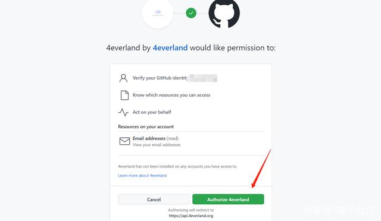
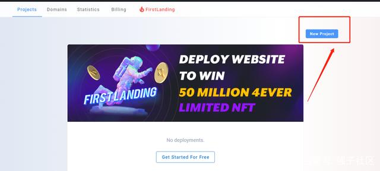
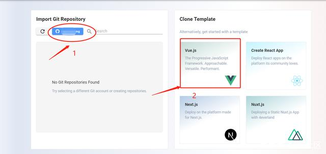
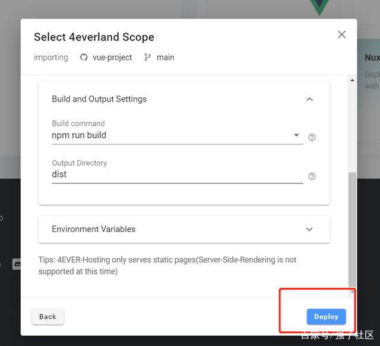
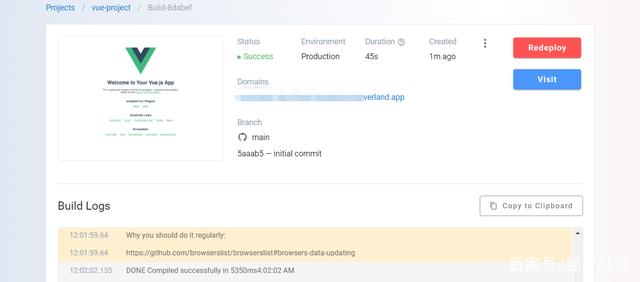

4everland撸币教程(web3.0赛道，未来可期)
一：使用github账户登录4EVERLAND官网：https://www.4everland.org/，github账号必须是9.8之前注册的,使用账号可以一键登录。
二：访问活动页面：https://hosting.4everland.org/#/?invite=OV9GGLIW,点击new project创建一个项目
三：然后点击Connect to Git，从自己的Github库或者右侧4EVERLAND提供的模板中选择一个项目进行创建。
四：设置参数，系统会自动帮你识别框架，点击Deploy
五：部署完成
（最后步骤完成可获得1000个4EVER）Web3.0版块后面应该会有爆发，不要放过任何一个羊毛
开始时间：9 月 15 日 0:00 (UTC) 结束时间：10 月 7 日-10 月 14 日 不定时结束，尽量在7号前完成 注意：必须要9.8号之前注册的github账号才能参与